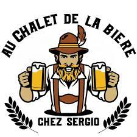

Elèction de miss Bruyères

Comme toutes les années, le cercle d'animations Bruyèrois organise une élection de miss Bruyères. Cette année, l'élection aura lieu le 15 juin 2023 à la salle des fêtes. Pour participer, il suffit de s'inscrire auprès du cercle d'animations Bruyèrois par mail ou à la mairie. Les inscriptions sont ouvertes jusqu'au 10 juin 2023. Pour plus d'informations, vous pouvez nous contacter par mail ou par téléphone.
Fête de la bière
Le cercle d'animations Bruyèrois organise une fête de la bière le 1 juillet 2023. Cette année, la fête se déroulera au chalet de la bière, 36 avenue du camroun. Pour plus d'informations, vous pouvez nous contacter par mail ou par téléphone.